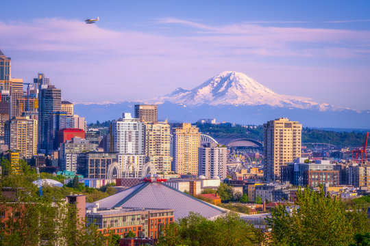

About Me
My name is Parker. I was born in Vancouver, Washington and currently live in Rexburg with my wife Shelby. My major is Software Engineering and I work at the Faculty Technology Center on campus. I love playing piano, singing, and building Legos.
Vancouver, Washington

Vancouver is located on the Washington-Oregon border along the Columbia River, directly north of Portland. It's very green and has many beautiful hikes and trails both in and around the city.